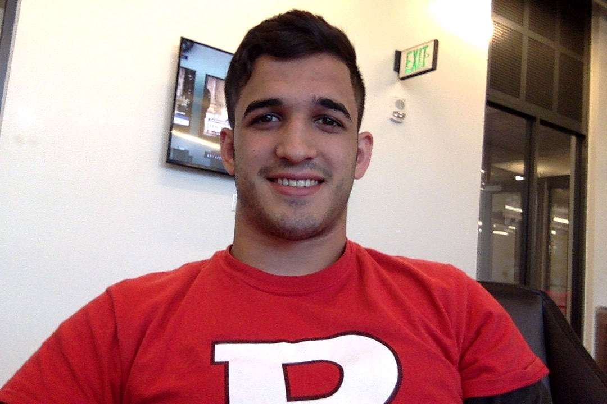

About Me
My name is Nicholas Ciambrone and I am currently studying Business Analytics Information & Technology
at Rutgers Business School.I am currently studying at the Rutgers Coding Bootcamp in hopes of one
day creating my own website.
I had an idea for a website in highschool that I had always thought would be cool, and hoped one
day someone would make it. In college I was introduced to coding in in a class called "Computer Applications
for Business", and I decided to BE the change I wanted to see in the world and one day create the
website that I imagined in high school.
After graduating I want to be a software engineer and work on side projects for additional income.
I hope to work at a highly regarded company like Amazon or Google.